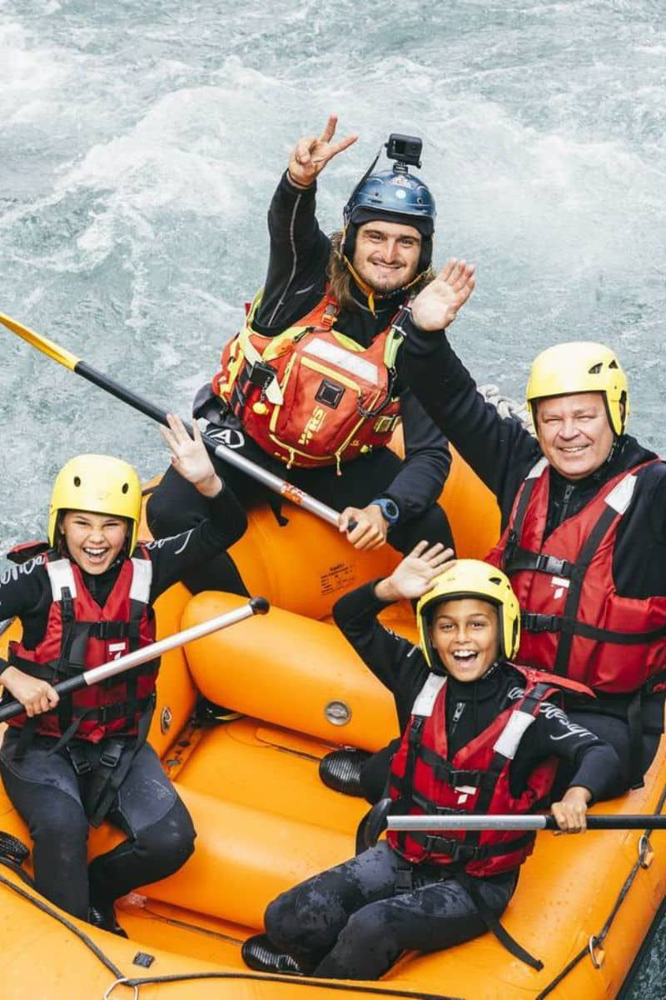
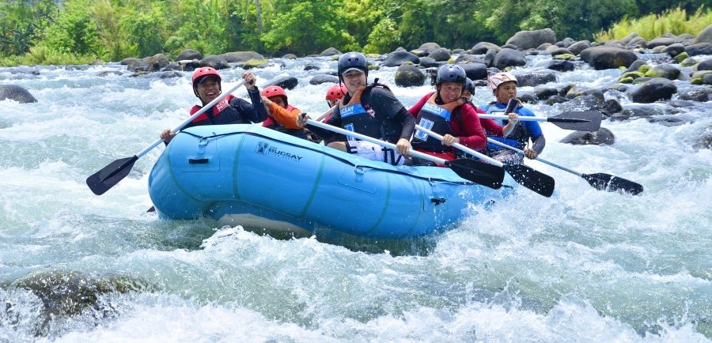

Our mission is to provide safe, exciting, and unforgettable white water rafting adventures. Whether you are new to rafting or an experienced adventurer, our professional guides are here to make your trip amazing.


White Water Rafting Co.
History
White Water Rafting Co. was founded by outdoor enthusiasts who wanted to share their love of adventure with others. Over the years, we have guided thousands of guests through beautiful rivers and thrilling rapids.